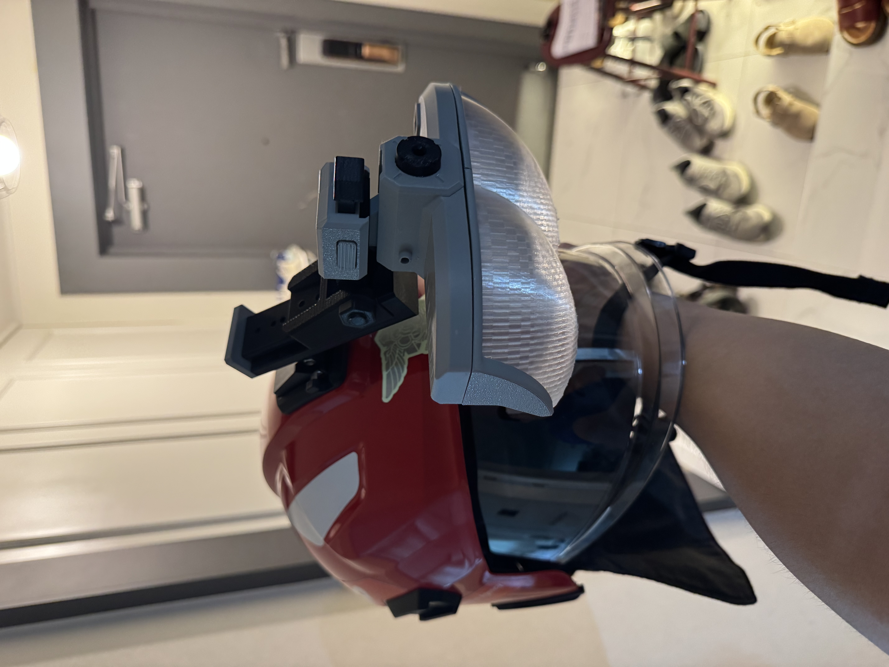
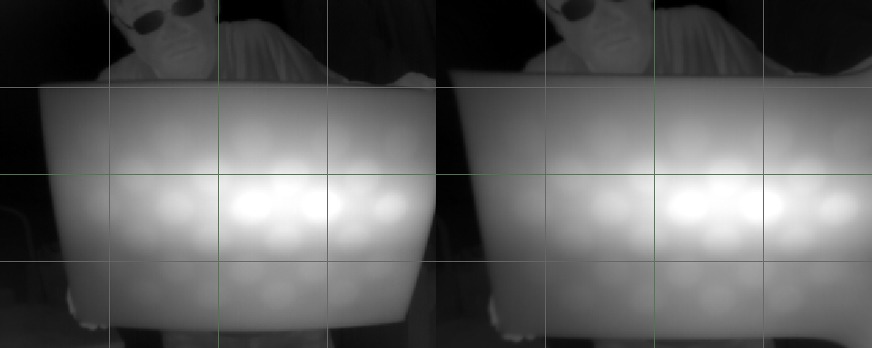

FiresightARFiresightAR
농연 속에서도 주변을 인식할 수 있도록.Making surroundings legible in low visibility.

프로젝트 개요 · 참여Overview & contribution
소방관의 구조물·장애물 인식을 돕는 열화상 기반 AR 시스템. 센서 퓨전, 캘리브레이션, 컴퓨터 비전을 담당합니다.A thermal-imaging AR system for firefighter situational awareness. My work focuses on sensor fusion, calibration, and computer vision.
구현과 접근Approach & implementation
열화상 영상의 대비 보정, TEED 기반 윤곽선 검출과 HUD 표시 파이프라인을 개발합니다. Boson 내부 캘리브레이션에서는 촬영·사진 선별·보정 계산·결과 비교 과정을 연결했습니다. 현재 시제품의 처리 성능과 실제 현장 사용성은 검증 중입니다. 중간평가 자료에서는 열화상·근적외선 영상과 전방 구조 윤곽을 Nreal Light AR 글래스로 출력하는 HUD 프로토타입을 소개했습니다. 팀은 국내외 소방대원 사용자 조사를 수행했으며, 통합 시제품과 윤곽·거리 정보 표시를 고도화하고 있습니다.I develop a pipeline for thermal-image enhancement, TEED-based edge detection, and HUD visualization. The Boson intrinsic-calibration workflow connects capture, image selection, calibration, and result review. Runtime performance and field usability remain under evaluation. The interim project review documents a HUD prototype displaying thermal/near-infrared imagery and structural outlines through Nreal Light AR glasses. The team conducted firefighter user research in Korea and the US; integration and outline/distance visualization remain ongoing development work.
시각자료 · 데모Visuals & demo
